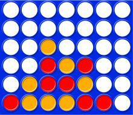
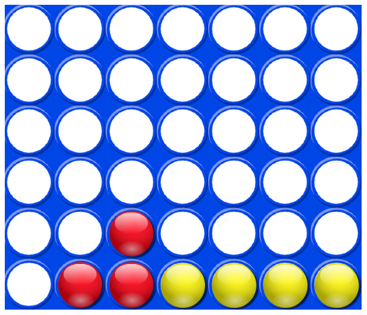
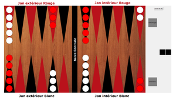
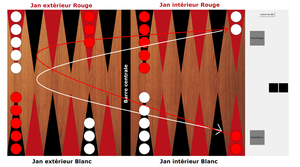
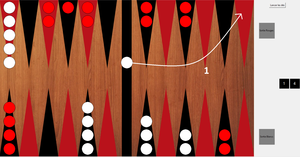
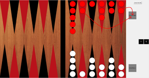

Le but du jeu est d'aligner 4 pions sur une grille comptant 6 rangées et 7 colonnes. Chaque joueur dispose de 21 pions d'une couleur (par convention, en général jaune ou rouge). Tour à tour les deux joueurs placent un pion dans la colonne de leur choix, le pion coulisse alors jusqu'à la position la plus basse possible dans la dite colonne à la suite de quoi c'est à l'adversaire de jouer.
Le vainqueur est le joueur qui réalise le premier un alignement (horizontal, vertical ou en diagonale) d'au moins quatre pions de sa couleur. Sur l'exemple ci-dessous, le joueur jaune gagne car il a aligné 4 pions horizontalement. Si, alors que toutes les cases de la grille de jeu sont remplies, aucun des deux joueurs n'a réalisé un tel alignement, la partie est déclarée nulle.
Le backgammon se joue à deux, sur un plateau (board) sur lequel sont matérialisés vingt-quatre pointes étroites, que nous appellerons flèches. Les flèches sont de couleurs alternées et forment quatre zones de six flèches chacune. Ces zones sont appelées jan intérieur et jan extérieur du joueur ainsi que jan intérieur et jan extérieur de son adversaire. Les jans intérieurs et extérieurs sont séparés par une partie centrale appelée la barre.
Le but du jeu pour chaque joueur, est de ramener tous ses pions dans son jan intérieur et de les sortir du plateau (bear off). Le premier joueur ayant sorti tous ses pions gagne la partie. Ci dessous le sens de déplacement des pions:
Le joueur blanc commence la partie en lançant les dés. Le jet de dés indique de combien de points le joueur doit déplacer ses pions. Les pions se déplacent toujours dans le sens indiqué plus haut. Les règles suivantes s'appliquent : 1. Un pion peut être déplacé seulement vers une flèche libre (flèche qui n'est pas occupée au moins par deux pions de l’adversaire). 2. Les nombres sur les deux dés composent des déplacements séparés. Par exemple, si un joueur jette 6 et 4, il peut déplacer un pion de 6 vers une flèche libre et un autre pion de 4 vers une flèche libre, ou il peut déplacer l'un des pions par le total, soit 10, vers une flèche libre, mais seulement si la flèche intermédiaire (la 6e ou 4e flèche du point de départ) est également libre. 3. Un joueur qui lance un double, joue 4 fois le numéro indiqué par les dés. Un double 5 signifie que le joueur a quatre 5 à utiliser, il peut donc déplacer de n'importe quelle façon ses pions en respectant les conditions ci dessus. 4. Un joueur doit obligatoirement utiliser les deux nombres d'un tirage quand cela est possible (ou les quatre en cas de double). Quand un seul dé peut être joué, le joueur doit le jouer et passer son tour. Si un seul des dés peut être joué mais pas les deux, le joueur doit jouer le plus grand. Quand aucun des dés ne peut être utilisé, le joueur passe son tour. En cas de double, si les quatre déplacements ne peuvent être réalisés, alors le joueur doit jouer autant de fois que possible et passer son tour.
Une flèche occupée par un seul pion de l'une ou l'autre des couleurs s'appelle un blot. Si un pion adverse arrive sur un blot, le pion est frappé et placé sur la barre. Quand un joueur a un ou plusieurs pions sur la barre, sa priorité est de rentrer ce(s) pion(s) dans le jan intérieur adverse. Il ne peut effectuer aucun déplacement sur aucun pion tant qu'il lui reste des pions sur la barre centrale. Un pion est rentré en le déplaçant de la barre vers une flèche libre correspondant au chiffre indiqué par un des dés. Par exemple, si un joueur tire 4 et 3, il peut rentrer un pion sur l’une ou l’autre des flèches 4 ou 3 du board intérieur adverse, à condition que cette flèche ne soit pas occupée par au moins 2 pions adverses. Si ni l'une ni l'autre des flèches n'est libre, le joueur passe son tour. Si un joueur peut rentrer qu’une partie de ces pions mais pas la totalité, il doit rentrer tout ce qui est possible et passer le reste de son tour. Après avoir rentré le dernier de ses pions, tous les dés inutilisés doivent être joués, en déplaçant un pion rentré ou tout autre pion sur le jeu.
Une fois qu'un joueur à rentré ses quinze pions dans son jan intérieur et uniquement à cette condition, il peut débuter la sortie. Un joueur sort un pion en utilisant le nombre indiqué par un des dés qui correspond à la flèche sur lequel il se trouve, en le sortant du jeu. Ainsi, un 5 permet de sortir un pion placé sur la flèche 5. S'il n'y a aucun pion sur la flèche indiquée par le dé, le joueur doit obligatoirement effectuer un déplacement d’un pion depuis une flèche en amont . S'il n'y a aucun pion sur une flèche en amont, le joueur est autorisé (et obligé) de sortir un pion de la flèche la plus éloignée de la sortie. La sortie n’est pas obligatoire s’il est possible de faire un autre déplacement.
Le simon est un jeu très simple. L'ordinateur affiche une combinaison de lumières qui sont associées à des sons au joueur. Le joueur doit à chaque tour reproduire la combinaison présentée. A chaque fois qu'il réussit la combinaison s'allonge d'une lumière. Plus le jeu avance plus cela devient difficile néanmoins le joueur doit continuer à reproduire la combinaison. S'il se trompe sur une seule note il doit tout recommencer à 0. Le but du jeu est donc d'entrainer sa mémoire et d'essayer de battre son record.